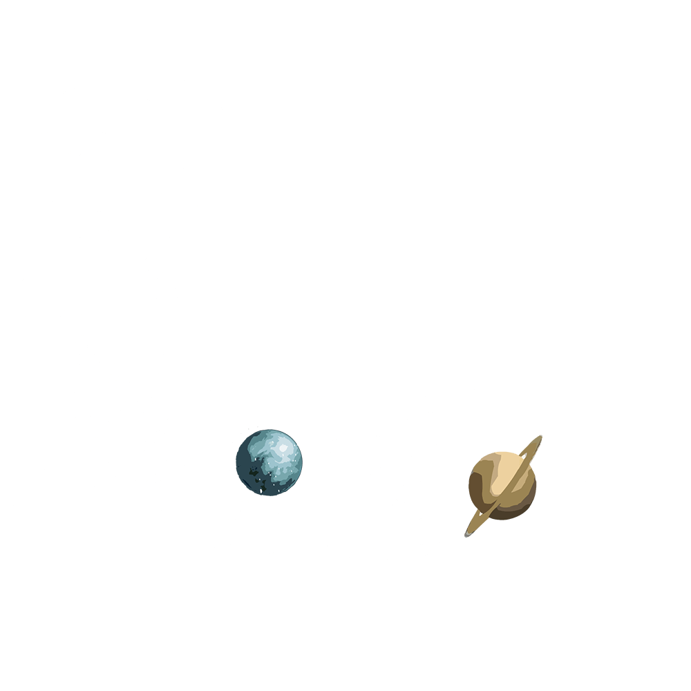
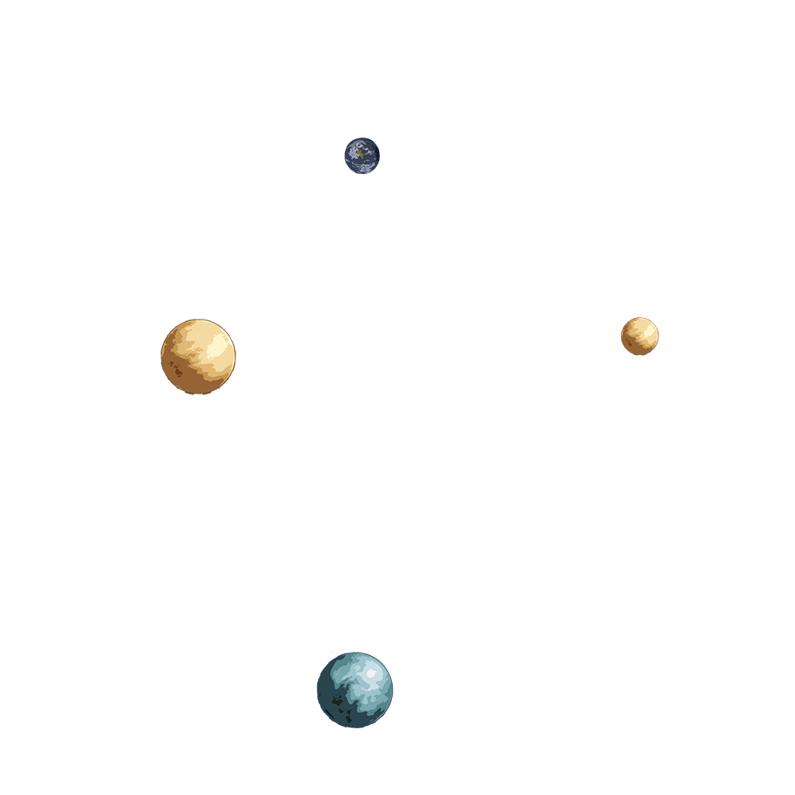
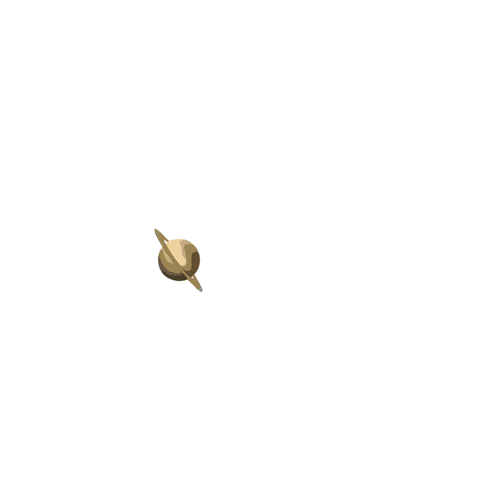
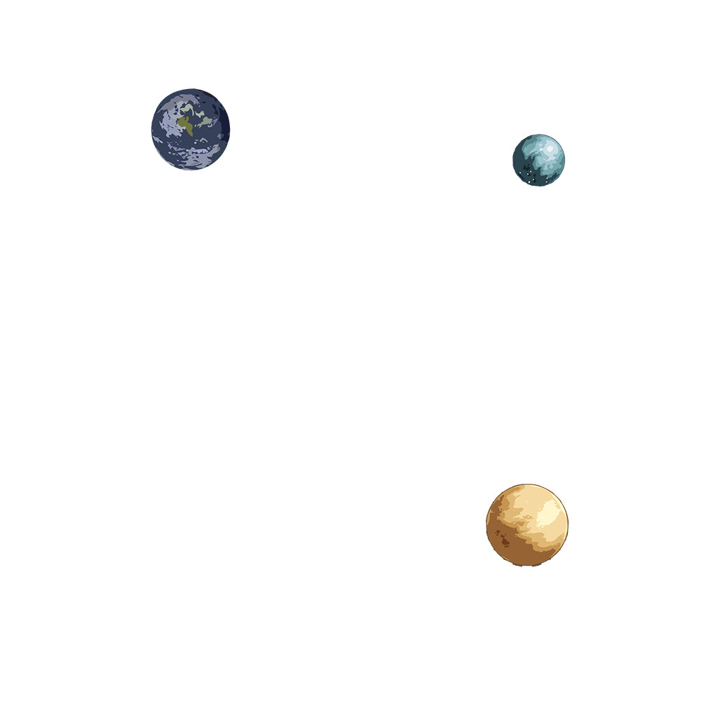
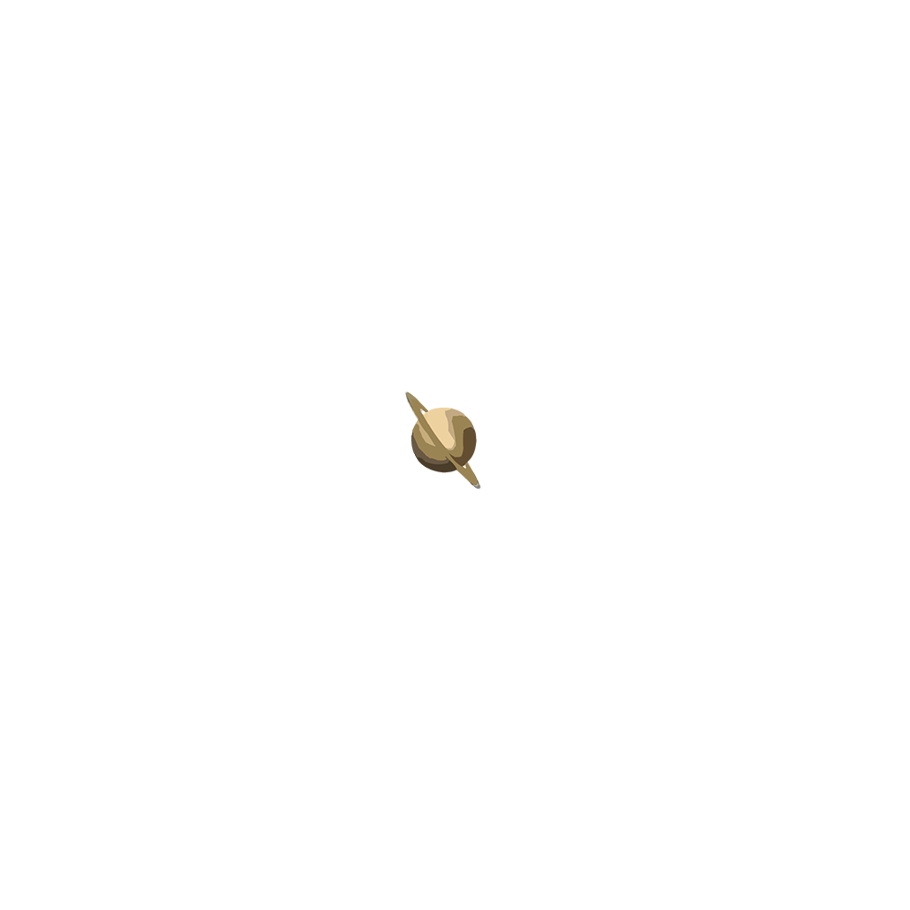
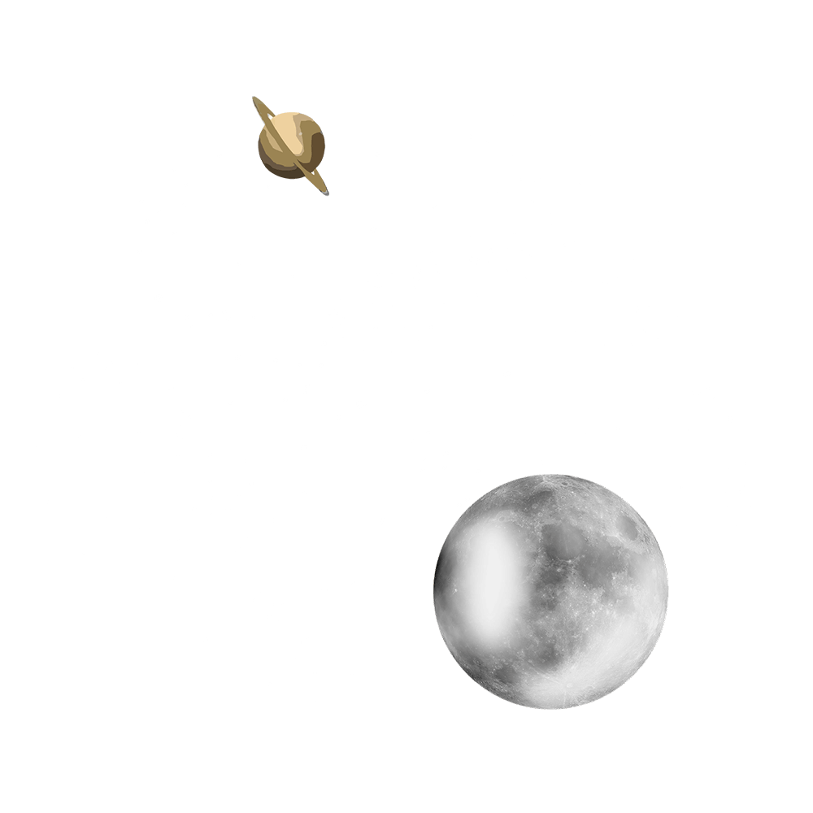

How to play hide and seek:
- Leave and count to 10
- Come back and find what might present itself
- That's it! No looking!
You found me!
You're two good four this! You're one Person to watch!






laptop_windows
Once upon a time, the Queen's was lost but she copied these very words and sent them to her friend D - "All is not what it seems". Once sent, her problems were in the pasted and a solution was found.
Address Book
1. D - d.p@arton.org.uk
2. Santa - santa@hotmail.co.uk
3. Aaron - aaron@outlook.com
Recipe for Spirited Wine
bottles of red winewhole oranges
cinnamon sticks
I'm sure cook has left the prime ingredients somewhere.
I really should note where!
balcony